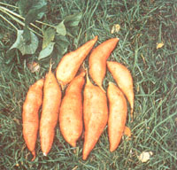
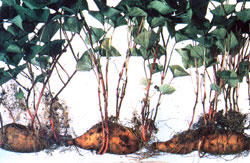
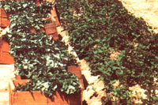

Don't pass up this nutritious, delicious, easy-to-grow vegetable. Learn the secrets of . . .
When I first started raising bedding plants for sale, I was able to gain some expertise from reading, and picked up a few tips from my friendly competitors, as well. But the forcing of sweet potato "slips," a specialty practiced by only a few growers, was a secret that no one seemed to wish to share. Eventually, however, a man who was about to retire agreed to teach me his methods.
This grower started his slips in a hotbed. He dug out an area about 1' deep, laid down 2" of straw (sometimes, he said, he used corncobs or even small broken twigs), and covered the coarse layer with 4" of fresh horse manure topped by about 3" of loose and leveled sandy soil.
Sound tubers from the previous year's crop were laid on this bed, topped with another 3" to 4" of very sandy soil, and watered. The entire seedbed was then covered with panes of glass raised upon a frame, and burlap bags were placed over the panes to retain the warmth generated below. A few days later, the manure had begun to decompose, and the sand felt warm to the touch.
After about two weeks, my instructor removed the burlap insulation to allow the shoots to soak up some sunlight. (The first green beauties were just peeking through the sand.) He also opened the glass a bit to provide ventilation on sunny days and-when the plants were about 5" tall-removed the cover.
The "opening of the tater bed" was an event that had been eagerly awaited by our area's impatient gardeners, and they flocked to the event like chickens to a pail of cracked corn. The grower dug gently into the sand and snapped the plants from the tubers with a slightly twisting, tugging motion . . . bundled them as ordered . . . and passed the young sprouts to waiting hands.
By nightfall, the bed looked like a disaster area, but the grower watered it thoroughly with lukewarm water, and the surface once again appeared smooth and level. He assured me that more shoots would emerge to supply the gardeners who hadn't been able to come on "opening day."
Unfortunately, I couldn't make immediate use of the knowledge I'd gained, since I had no ready source of fresh manure or sproutable homegrown stock. Finally, with the help of our local farmer's cooperative, I managed to order some certified seed potatoes and then went on to devise my own starting bed while waiting for them to arrive.
I constructed 8" sides to surround a section of greenhouse bench and covered the bottom of this bed with 3" of sand. A plastic skirt enclosed the area underneath the bench, with all four sides going completely to the ground. Then, to warm my slips-to-be, I put an electric heater, well protected from dripping water, in the enclosed space under the bench.
When the roots arrived, I placed them on the sand so that they were almost, but not quite, touching one another. Then I filled the bed nearly to the top with more sand and soaked it with water before inserting a thermometer about halfway down into the sand. (A soil thermometer might have been more appropriate, but I had none, and an ordinary household type seemed to serve just as well.) Finally, I put a plastic sheet over the bed to hold the warmth during the initial heating.
Once the heater was turned on, I allowed it to run until the sand registered about 95°F. Then I let the soil temperature gradually subside and held it at 80°.
Occasional watering was required during the forcing of the sprouts, since the heat tended to dry out the sand. I always used warm water (about 100°F) so as not to cool down the sprouting roots.
Once the shoots were visible, I let the sand temperature drop to 70°F, because the impetus provided by the initial extreme warmth would keep the sprouts coming, and temperatures above 75° would promote elongation of existing plants. In fact, my first shoots did get very long before it was time to plant them out, so I transferred them to 4"-diameter pots and let them form husky root systems. These plants were pinched after three sets of leaves had developed, to hold them to a manageable size. I left subsequent slips right in the sand until selling time, but they did become very crowded.
In later years I solved the crowding problem by preparing a second bed near the starter bed, filling it with regular potting soil, opening miniature trenches 3" apart, and heeling in the first flush of plants, spacing them 1/2" to 1" apart. Sweet potato slips can get leggy very quickly, and replanting slows down the growth, allows the plants to form roots, and keeps them in good shape for two to three weeks, which is sometimes necessary if the weather turns unexpectedly cold when the plants are ready to sell.
Nowadays, gardens tend to be smaller than they were when I first got into business, and sweet potatoes aren't grown as extensively. Many gardeners, however, still like to include a short row in their backyards. The plants are pretty, and almost care-free once started, and the roots provide delicious eating.
Sweet potato slips can, of course, be ordered by mail or purchased from markets that receive supplies from the South. But these usually have been several days in transit before you get them, and they're frequently only available in large packages of 50 to 100 plants.
A small number of slips can be obtained by starting tubers in the same way you'd start a sweet potato vine for use as a houseplant. To do this, you'll probably need to find sweet potatoes somewhere other than at the supermarket, since those are often treated with a chemical to keep them from sprouting. (Try local farmers' markets, or you can order untreated potatoes for slips from Gurney Seed & Nursery, Yankton, SD 57079; J.W. Jung Seed Company, 339 S. High St., Randolf, WI 53957; Burpee Seed Company, 300 Park Ave., Warminster, PA 18974; or H.G. Hastings and Company, Box 4274, Atlanta, GA 30302.) Choose a healthy tuber and stick three toothpicks around the sides so they extend out at right angles. Lower the root into a glass or jar of water, letting the toothpicks rest on the rim and making sure the bottom of the root is covered with water. Keep the jar in a warm, sunny window and change the water occasionally. I've also read that you can cut sweet potatoes in half lengthwise, lay them, cut side down, in an aluminum pan filled with moist peat moss, cover them with more peat, and then enclose the whole assembly in a plastic bag. This sounds like a good alternative, but I've had poor results with it myself: The halves tended to rot.
No matter which method you choose, though, the real key to slipping this tropical vine is heat. The soil (or sand) temperature must at first be at least 80°F if you're to be successful, and the shoots will need lots of bright light as soon as they break the surface.
Although it's possible to get as many as 50 slips from one large root, don't depend on three potatoes producing a total of many more than 25.
Finally, be sure to choose a variety particularly suited to your growing season and climate. Centennial, which is well adapted to cool summers, grows well in our Appalachian garden. It has deep orange flesh and skin and yields extra-large roots. For warmer climates, try the delicious Bush Porto Rico. It grows in limited space, has copper-colored skin and reddish orange flesh, and is excellent for baking. The early-maturing, high-yield Jewell is another warm-weather potato. Its bright copper skin and deep orange flesh have long made it a favorite for holidays. Your local extension agent or nursery can help you decide on the best variety for your locale.
In our part of West Virginia, sweet potatoes are commonly grown atop 6" to 12" ridges and are spaced about 3' apart. This hilling provides good drainage and contributes to the early warming of the soil. Feel free to choose the sandiest spot in the garden, too, since the ground doesn't need to be rich to grow a bumper crop of sweet potatoes.
If you use fertilizer, you'll need a lownitrogen mix (5-10-10), and you should count on using about 1-1/4 pounds per 25' row. Bonemeal is also good for sweet potatoes. Use 1 cup per 25' row, and side-dress with the same amount when the plants begin to spread.
It's best, however, not to rush to get this particular crop in the ground; the soil temperature should be at least 60°F. In West Virginia, slips aren't usually planted until around Memorial Day, and when the spring has been cold, they're often not put out until mid-June.
Plants are set deeply in the ridges, sometimes with only a crown of leaves showing. Long stringy ones are best laid horizontal ly. Cover the stems with soil, and the tops will turn upward in a day or so.
Newly set plants should be watered for a few days while they recover from planting a shock. After that, they'll need little attention.
Weed control is necessary for a short while, but once the plants begin to vine, their leafy canopy will shade out most emerging weedlings. (Though sweet potatoes are quite drought-resistant, watering during dry spells will increase yields.)
Our growing season is short compared to some, and we've discovered that many long season crops respond well to mulching with plastic. Sweet potatoes in particular seem to produce better when this material is used for early-season soil warming.
I lay the plastic over the prepared ridges, anchor the edges with stones or soil, and insert the plants through slits cut in the sheet. The earlier and more intense ground heat that results from the black material's sun-soaking properties tends to give the plants a much quicker start; the mulch also eliminates the need for cultivation or weeding.
If your garden space is limited, try growing a few sweet potatoes in a container. It should be at least 12" deep and 15" wide (a bushel basket is fine). Use a light, porous, sandy mix and put a trellis in the middle to support the vine. Since these plants have no self-supporting tendrils, you'll need to weave the growth through the openings. Tubers grown in such confined space are rounder and shorter than those produced in open ground, but they have a very fine, meaty taste.
Sweet potatoes destined for long-term storage are best harvested late in the season, because the tubers continue to enlarge throughout the life of the vine. (You can, however, run your fingers through the soil around the base of the plant and steal a few for an early taste without damaging the rest.)
Dig the entire crop immediately after the first frost, or even earlier if the weather is unseasonably cool, because a ground temperature of below 50°F can promote decay in the roots even if frost doesn't occur. However, make sure you're gentle when handling the sweet potatoes; dig cautiously-using a garden fork-and transport them with care. The slightest cut or bruise will greatly shorten a tuber's storage life.
Dry the potatoes in the sun for about half an hour, but no longer, then lay a single layer in a box, cover the tubers with perforated plastic or newspaper, and cure the crop at room temperature for two weeks. You'll want to store the potatoes in a spot where the temperature will remain between 55° and 60°F, since anything cooler will promote rot and warmer temperatures will encourage the roots to sprout. Your hoarded harvest should provide you with some fine winter dishes-but don't forget to save a few medium-size potatoes to use when starting next year's plants!
|
 As this photo demonstrates, one sweet potato can produce a goodly number of slips. A big root can yield from 25 to 50 plants. |
 During the first few days after moving the plants from hotbeds to raised beds, you'll need to provide water to lessen transplant shock. After that, the taters need little attention. |
 |